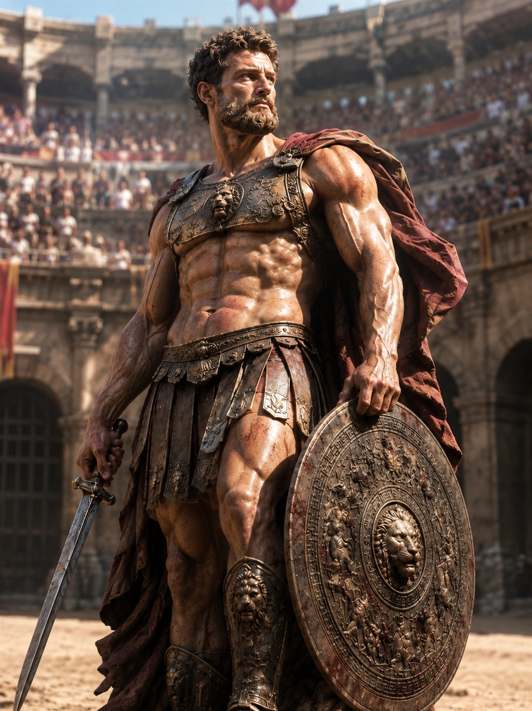

GENERATIEVE AI · BEELD & VIDEO
Generatieve AI
Fotorealistische beelden en video genereren met lokale AI — van prompt en model tot afgewerkt resultaat, volledig op mijn eigen GPU.
RESULTAAT
Fotorealistische beelden en video, met eigen LoRA's getraind op één RTX 4070 — volledig lokaal.

01 HET PROBLEEM
Goede AI-beelden en video zijn geen kwestie van één knop. Het zit in prompting, de juiste modellen kiezen, eigen LoRA's trainen en netjes afwerken. Ik wilde die hele pijplijn lokaal beheersen — zonder cloud-abonnement, met volledige controle over stijl, kwaliteit en privacy.
02 WAT HET DOET
- Fotorealistische beelden
- Van portretten en sculpturen tot cinematische scènes, met aandacht voor licht, compositie en detail.
- Eigen LoRA-training
- Modellen fijn-afstemmen op een specifieke stijl of personage, getraind op mijn eigen RTX 4070.
- ComfyUI-workflows
- Node-gebaseerde pijplijnen voor herhaalbare, controleerbare resultaten in plaats van willekeurige output.
- Ook video
- Dezelfde workflow uitgebreid naar korte, bewegende beelden — van stilstaand naar clip.
- Volledig lokaal
- Alles draait op mijn eigen machine: geen cloud, geen abonnement, volle controle en privacy.
03 WAT IK ERVAN LEERDE
Het verschil tussen ‘een plaatje’ en een bruikbaar resultaat zit in de workflow: prompten, itereren, trainen en afwerken. Lokaal werken dwong me de hele pijplijn te begrijpen in plaats van te leunen op een externe dienst.
INTERESSE?
Laten we praten.
Vertel me wat je ervan vindt — of wat je ermee zou willen doen.